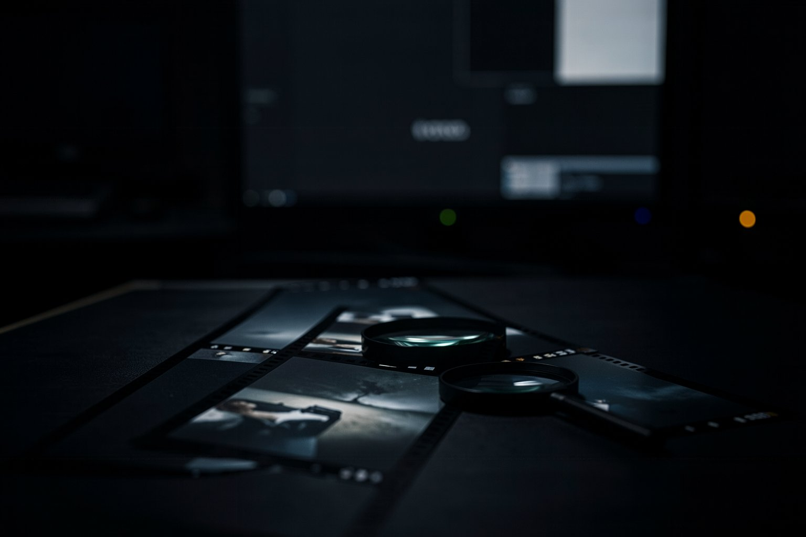

Formación Cine con IA · curso 5 de 6 · 8 clases
Sitios cARCKHÉtográficos: el video se vuelve página, y la página abre rápido
Un clip se vuelve cuadros, el scroll elige el cuadro y la página parece una película. Aquí lo armas con un agente, mides el peso, agregas profundidad con Three.js, haces la película de la marca a partir del sitio, encadenas clips sin corte y lo revisas en el celular y con reducir movimiento. Todo local, sin gastar crédito.

- 8clases
- 25bloques de terminal probados
- 4/4puerta de control final
- 0crédito gastado
Las clases
Una página de producto ficticia, el lente Aurora 35, atraviesa el curso. El kit trae la página, los scripts de revisión y clips de ensayo hechos con ffmpeg: no necesitas ningún generador de video.
 Clase 1 · 15 minQué es un sitio cARCKHÉtográfico y cuándo vale su pesoUn sitio cARCKHÉtográfico parece una película que avanza con el scroll. Por debajo, no hay 3D ni video reproduciéndose: hay cuadros de un clip dibujados en un canvas, uno por posición del scroll. Eso pesa. En esta clase corres la página de ejemplo del kit, mides cuánto pesa para cada visitante y decides, con un número, si tu producto pide una.
Clase 1 · 15 minQué es un sitio cARCKHÉtográfico y cuándo vale su pesoUn sitio cARCKHÉtográfico parece una película que avanza con el scroll. Por debajo, no hay 3D ni video reproduciéndose: hay cuadros de un clip dibujados en un canvas, uno por posición del scroll. Eso pesa. En esta clase corres la página de ejemplo del kit, mides cuánto pesa para cada visitante y decides, con un número, si tu producto pide una.
Clase 2 · 15 minDel video a los cuadros: extraer, comprimir y ordenar la secuenciaLa calidad del movimiento en el scroll se decide aquí. Pocos cuadros y la película se vuelve diapositivas; cuadros grandes y la página no abre en el celular; nombres sin ceros y la película salta. Haces un clip de ensayo con ffmpeg a partir de una foto, extraes todos los cuadros y revisas cantidad, orden y peso con un script. Clase 3 · 18 minScroll que controla el tiempo: la skill de scroll cinemáticoEl motor que conecta el scroll con los cuadros tiene pocas piezas, y cada una resuelve un tropiezo medido. Ves las piezas, cambias los cuadros de la página del kit por los tuyos de la clase 2, pruebas con el contrato de prueba que el cuadro correcto aparece en cada punto y le pides la página nueva a la skill scroll-film-studio, de ARCKHÉ.
Clase 3 · 18 minScroll que controla el tiempo: la skill de scroll cinemáticoEl motor que conecta el scroll con los cuadros tiene pocas piezas, y cada una resuelve un tropiezo medido. Ves las piezas, cambias los cuadros de la página del kit por los tuyos de la clase 2, pruebas con el contrato de prueba que el cuadro correcto aparece en cada punto y le pides la página nueva a la skill scroll-film-studio, de ARCKHÉ. Clase 4 · 15 minProfundidad con Three.js sin trabar la páginaLos cuadros de video dan la película; Three.js da una escena dibujada en código, que cambia de ángulo según el scroll. El riesgo es que la escena dibuje sin parar, incluso quieta o fuera de la pantalla, y caliente el celular. Aquí mides, en un Chromium sin pantalla, cuántas veces dibuja la escena en cada situación, y ves fallar el error común.
Clase 4 · 15 minProfundidad con Three.js sin trabar la páginaLos cuadros de video dan la película; Three.js da una escena dibujada en código, que cambia de ángulo según el scroll. El riesgo es que la escena dibuje sin parar, incluso quieta o fuera de la pantalla, y caliente el celular. Aquí mides, en un Chromium sin pantalla, cuántas veces dibuja la escena en cada situación, y ves fallar el error común.- Clase 5 · 18 minPelícula de la marca a partir del propio sitioHasta aquí el video se convirtió en página. Ahora el camino inverso: la página se convierte en video. filmarca (ARCKHÉ) lee colores, fuentes, logo, textos y capturas de un sitio y arma una película de la marca en HyperFrames. Tú corres el camino completo contra la página del kit sin llamar a ningún modelo, con las escenas modelo del propio filmarca, y después pones la película en la página.
- Clase 6 · 18 minFondo vivo: video generado dentro del sitioUna película de apertura larga sale de varios clips cortos encadenados, cada uno empezando en el último cuadro real del anterior. El riesgo es un corte escondido en medio de un clip. La skill site-movimento tiene puertas de control que lo detectan. Las ejecutas en clips de ensayo, uno continuo y otro con corte, sin gastar crédito.
 Clase 7 · 16 minCelular, peso y "reducir movimiento": el sitio que abre rápidoMucha gente abre la página en el celular en vertical, con red móvil, y algunas personas le pidieron al sistema menos movimiento. Una película horizontal recortada en la pantalla vertical pierde el asunto; una película que avanza a la fuerza molesta a quien pidió que se detuviera. Tú revisas la página en el celular de 390 px, con reducir movimiento, y recortas el peso de la película vertical.
Clase 7 · 16 minCelular, peso y "reducir movimiento": el sitio que abre rápidoMucha gente abre la página en el celular en vertical, con red móvil, y algunas personas le pidieron al sistema menos movimiento. Una película horizontal recortada en la pantalla vertical pierde el asunto; una película que avanza a la fuerza molesta a quien pidió que se detuviera. Tú revisas la página en el celular de 390 px, con reducir movimiento, y recortas el peso de la película vertical.- Clase 8 · 20 minTu sitio: una página de producto con scroll cARCKHÉtográfico publicadaEs hora de juntar todo en una página tuya. Partes de la plantilla del kit, cambias la foto y los textos por los de tu producto, rehaces las dos películas, pasas la puerta de control de cuatro verificaciones y publicas en GitHub Pages. El mismo verificador que corrió en tu máquina corre contra la URL pública: es él quien dice que está en línea.
Para quién es
- 1Para quien hace sitios con Claude Code o Codex y usa la terminal.
- 2Para quien ya tiene un clip (o lo va a generar) y quiere que se convierta en la apertura de una página.
- 3Para quien hizo el curso 3 (motion por código) y quiere llevar el movimiento al navegador.
Qué sales haciendo
- 1Convertir un clip en cuadros y conectar los cuadros al scroll.
- 2Medir el peso por visitante y decidir si la página merece la película.
- 3Agregar profundidad con Three.js sin dibujar por dibujar.
- 4Revisar el celular y reducir movimiento antes de publicar.
La formación (6 cursos)
- 10 · Dirección: pensar como director
- 21 · Generación: imagen y video con IA
- 32 · Producción: del guion a la película
- 43 · Motion por código con agente
- 54 · La fábrica de video con agentes
- 65 · Sitios cARCKHÉtográficos (este curso)